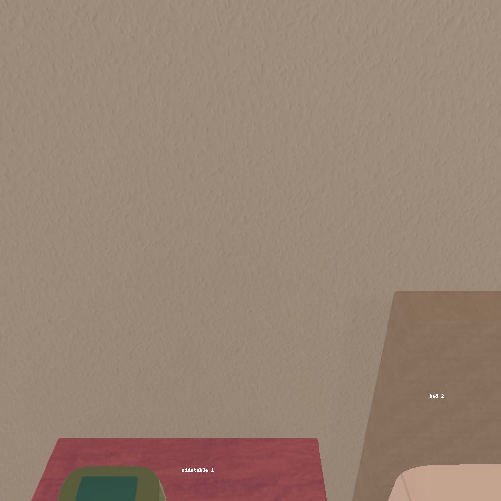
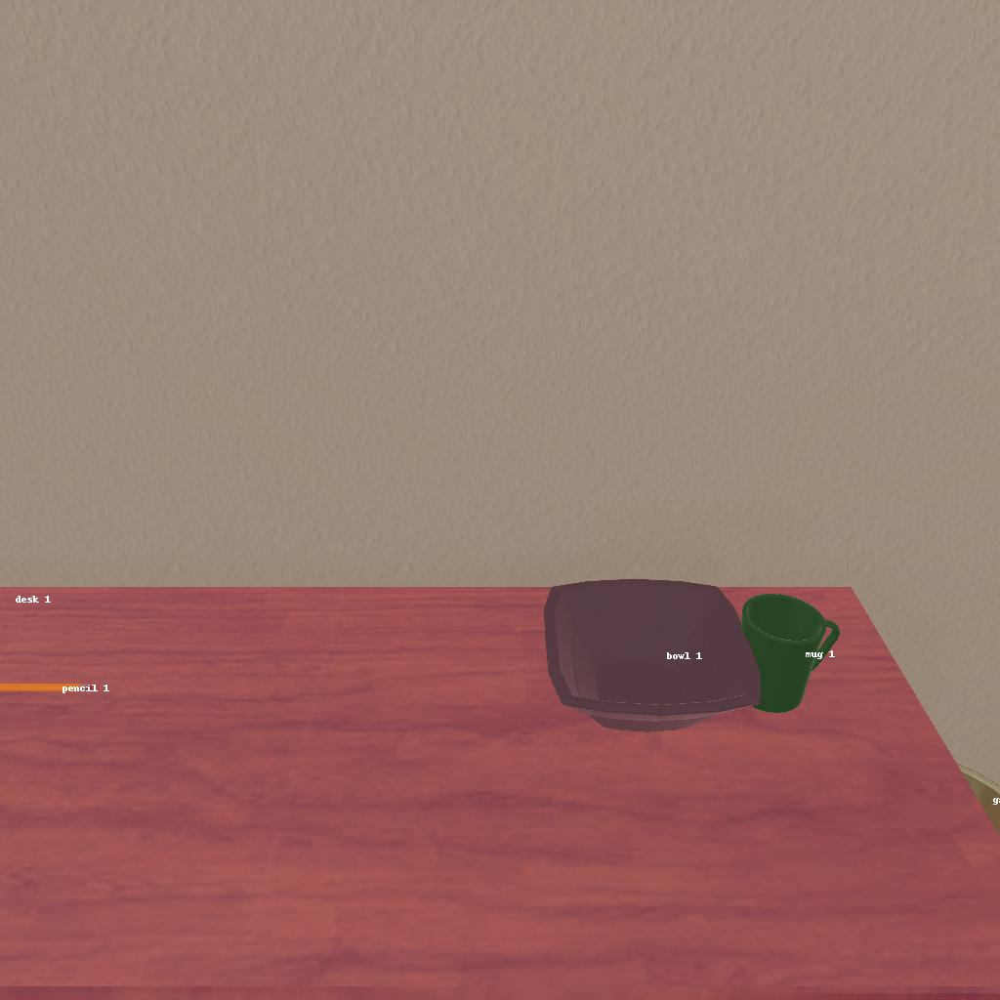

---------------------------------------------------------task: 2---------------------------------------------------------
--------------------------------------------------------------------------------------------------------------------------------------------------------------------
--------------------------------------------------------------------------------------------------------------------------------------------------------------------
Step:--------------------------------------------------------------------------1-------------------------------------------------------------------------------
----------------------------------------
VLM Prompt:
Image1:
Image2:
**Instruction**
1. Analyze the provided image to identify all visible household objects, focusing on those relevant to the task description "examine the pen with the desklamp."
2. Use the analysis of the image and the task hint "The agent must find an object of the desired type, locate and turn on a light source with the desired object in-hand." to answer the question: what is the most reasonable action in the choices for the task description "examine the pen with the desklamp"?
4. Decide and write the answer using the template: The answer is: (i): , where i is the real number. If there is no desired object in the image, search every place based on **Initial Observation** to find the object. And if no one is exactly correct, choose a similar answer.
**Initial Observation**
You are in the middle of a room. Looking quickly around you, you can see bed (1-2), dresser (1), drawer (1-11), sidetable (1-2), desk (1), garbagecan (1), safe (1)
**Answer Choices**
(1): go to bed 1
(2): go to dresser 1
(3): go to bed 2
(4): go to drawer 1
(5): go to sidetable 1
(6): go to drawer 2
(7): go to sidetable 2
(8): go to drawer 3
(9): go to drawer 4
(10): go to garbagecan 1
(11): go to drawer 5
(12): go to drawer 6
(13): go to drawer 7
(14): go to drawer 8
(15): go to drawer 9
(16): go to drawer 10
(17): go to drawer 11
(18): go to safe 1
(19): take bowl 1 from desk 1
(20): take mug 1 from desk 1
(21): take pencil 1 from desk 1
(22): examine desk 1
**Answer**
Let's think step by step by following the instructions.
----------------------------------------
----------------------------------------
Original Response:
The task description is "examine the pen with the desklamp." In both images, there is no pen or desklamp visible. However, there is a desk labeled "desk 1" in Image2, and there's an object labeled "pencil 1" on the desk, which is the closest item to a pen mentioned in the task description. Since no desklamp is visible in the images, we must search every place based on the Initial Observation to find the desklamp.
Given that "desk 1" is the location of the closest item resembling a pen (pencil 1), the most reasonable action would be to go to the desk first to take the pencil. After that, the agent would need to search the room for a desklamp or any light source to complete the task.
The answer is: (21): take pencil 1 from desk 1
----------------------------------------
----------------------------------------
>>> Refine Original VLM Response and Get Pure Action: take pencil 1 from desk 1
----------------------------------------
-----------------------------------------------------------------
Running time: 9.624780893325806 seconds
Total Money: 0.7396900000000002
-----------------------------------------------------------------
-----------------------------------------------------------------
Text Observation:You pick up the pencil 1 from the desk 1.
-----------------------------------------------------------------
UNSUCCEED